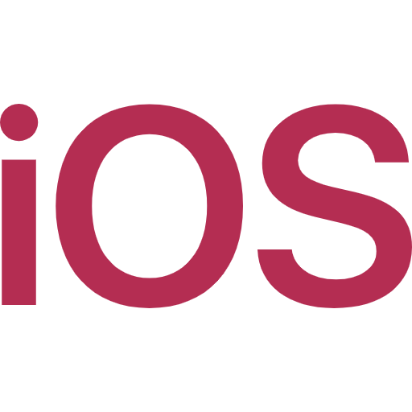
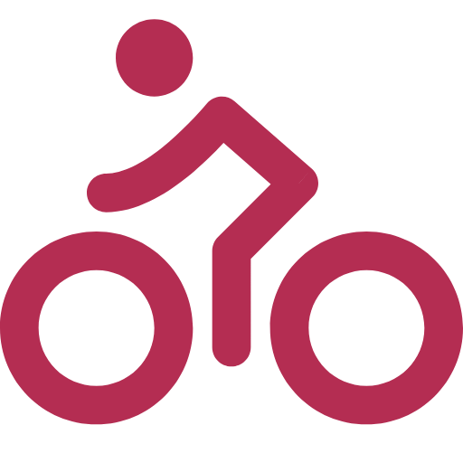
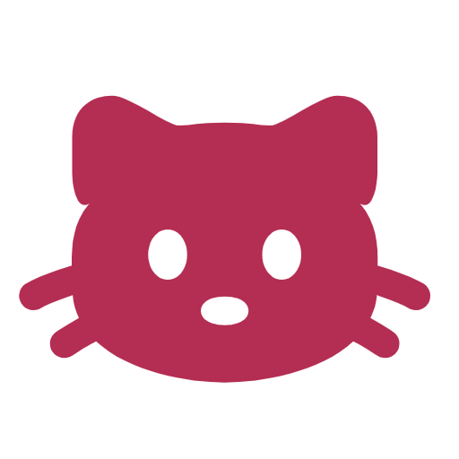

PERFIL
Olá, me chamo Angelica!
Há 3 anos eu trabalho com programação e atualmente eu sou desenvolvedora iOS em uma multinacional chamada CI&T, e pude participar de projetos e clientes nacionais e internacionais.
Meu objetivo é aprimorar minhas habilidades técnicas e ser Especialista Mobile Nativo.
CONTATOS
(35) 99741-0755
Poços de Caldas - MG
HABILIDADES
Swift
Kotlin
Java
Python
INTERESSES



Angelica dos Santos
Desenvolvedora Mobile Nativo
EXPERIÊNCIA
- Social Bank
- CI&T
Desenvolvimento Android • 2021 - 2022
Analise e desenvolvimento de sistemas de um aplicativo móvel voltado para atender a um público de um banco. Minhas responsabilidades abrangeram a elaboração de interfaces (UI) com XML, baseadas em protótipos criados pela equipe de design, até a implementação de funcionalidades essenciais utilizando a linguagem Kotlin criada pela JetBrains, para integração de APIs, banco de dados, otimização de desempenho e testes rigorosos para garantir a qualidade e a usabilidade do aplicativo.Desenvolvimento iOS • 2022 - HOJE
No papel de desenvolvedor iOS, estou atualmente focada na criação de aplicativos móveis para dispositivos iPhones. Minhas responsabilidades incluem a colaboração com a equipe de design para criarmos interfaces de usuário intuitivas e atraentes, além de implementar funcionalidades cruciais usando as mais recentes tecnologias da Apple, como Swift e SwiftUI. Também estou envolvido na integração de Acessibilidade para utilização de VoiceOver, automação, teste minuciosos para garantir a estabilidade do aplicativo e a entrega de uma experiência de usuário de alto nível.EDUCAÇÃO
- Pontifícia Católica de Minas Gerais
Ciência da Computação • 2020 - 2024
O currículo do curso apresenta equilíbrio entre a teoria e a prática, que formam as habilidades técnicas para o mercado de trabalho e propiciam formação em Fundamentos da Computação e Matemática. O aluno estuda as diversas tecnologias da computação como Banco de Dados, Processamento Gráfico, Engenharia de Software, Inteligência Artificial, Redes de Computadores e Sistemas de Informação, entre outras, além de disciplinas de formação humanística.CONHECIMENTO
- Becas Santander
- CI&T
Coders Mobile - Digital House • 2020 - 2021
Curso Desenvolvimento AndroidTomorrow's Talent • 2022
Curso Desenvolvimento iOS interno